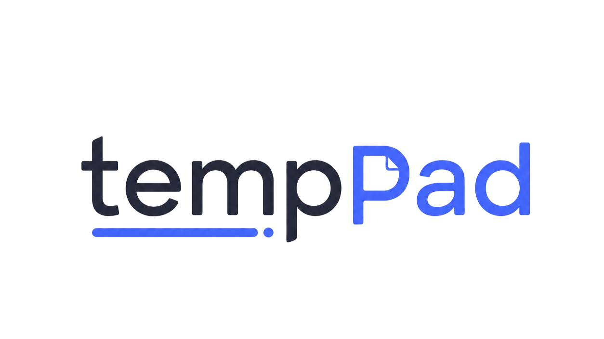

tempPad 是一张常驻托盘的"临时的纸"：随手记的自动保存、重启不丢，值得留下的一键存档，其余的用完即清。
窗口里几乎只有一张纸，其余的一切都退到了看不见的地方。
除了一条细顶栏，整个窗口都是书写区。存档、清空、复制——所有操作都收在右键菜单里。
边写边存，重启不丢。未保存时顶栏亮起一个小圆点，存好即熄——像 VS Code 一样安心。
值得留下的内容右键存档，一张新纸随即备好。存档随时可搜索、可编辑、可找回。
灵感不等人。任何时候按下 Ctrl+Alt+Space，一秒上屏；再按一次，安静退回托盘。
托盘菜单一键切换深浅配色，开机自启动也在同一处开关，状态自动记住。
笔记存在本机的 SQLite 文件里。不联网、无账号、无遥测，安装包不到 2 MB。
你的笔记，只属于你。
tempPad 不需要网络权限，也没有任何账号体系。数据就是一个本地文件，备份它即备份一切。